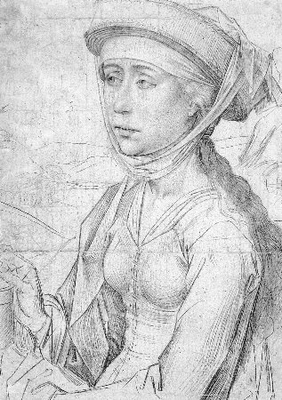
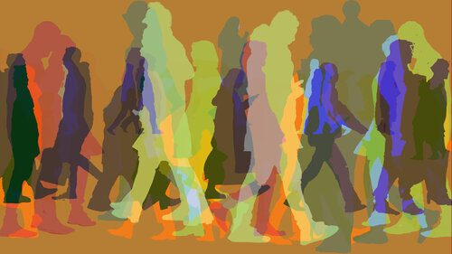
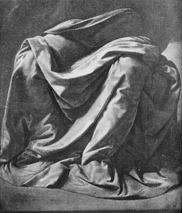
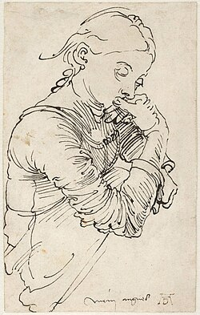
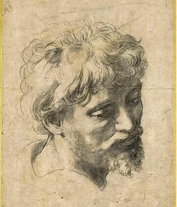
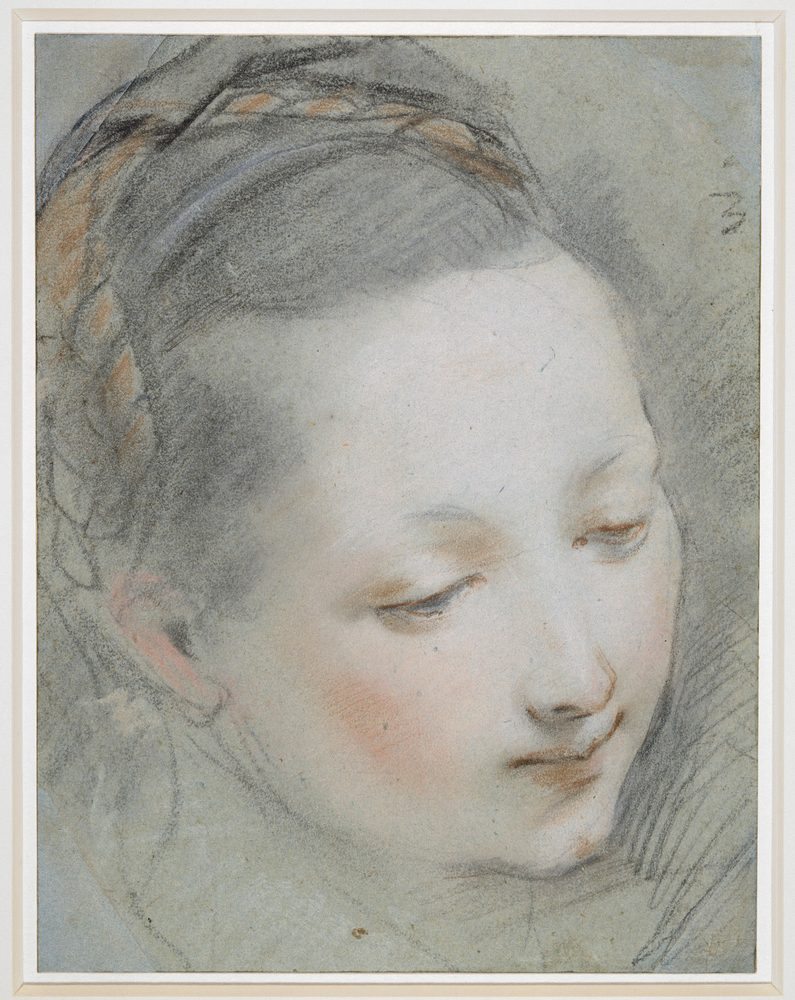
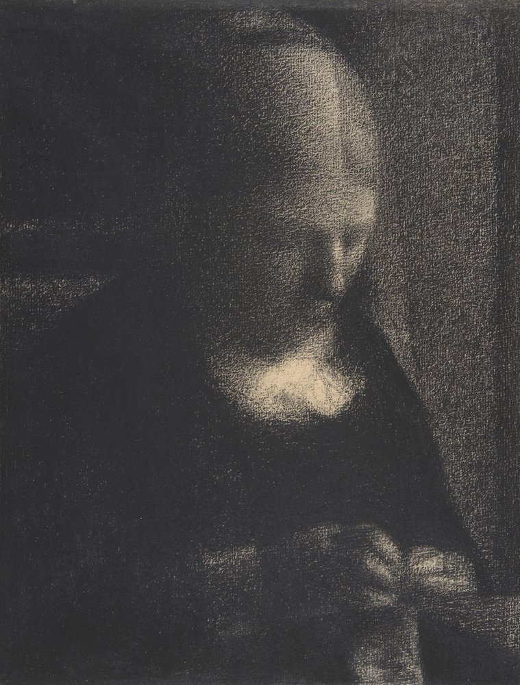

"Punta de plata"
Perfecta para delinear claramente los rasgos, consistía en trabajar sobre superficies previamente preparadas con gesso.
Intercambio de energía: 50 € 35 € ¡Ofrenda Temporal!

Por su viveza la pintura al pastel es más hermosa que cualquier otra.
En este espacio puedes contemplar cómo las ideas de los artistas se transforman al cambiar de herramientas. Las obras expuestas muestran ese viaje técnico y visual, comenzando con los dibujos clásicos hechos a mano y terminando con las creaciones modernas diseñadas píxel a píxel en un ordenador. Es una selección pensada para descubrir cómo conviven el pasado y el presente del arte.
Para entender mejor los trabajos de la colección, estos son los dos extremos que marcan el inicio y el final de nuestra evolución artística:
A continuación, te invitamos a explorar las imágenes de nuestra colección para ver estos conceptos en directo.

Perfecta para delinear claramente los rasgos, consistía en trabajar sobre superficies previamente preparadas con gesso.
Intercambio de energía: 50 € 35 € ¡Ofrenda Temporal!

Los artistas del Renacimiento realizaban un esbozo a carboncillo utilizando pintura blanca para iluminar las áreas claras.
Intercambio de energía: 65 € 45 € ¡Descuento Estelar!

En la década de 1500, el maestro alemán Alberto Durero utilizó la pluma para crear dibujos altamente complejos y expresivos.
Intercambio de energía: 60 € 40 € ¡Sintonía Espiritual!

Durante el Renacimiento, esta técnica de tono rojizo acercó el dibujo clásico a la calidez cromática de la pintura.
Intercambio de energía: 55 € 39 € ¡Conexión Cíclica!

Al combinar la tiza blanca con la negra, técnica conocida como aux deux crayons, se logran efectos de gran profundidad.
Intercambio de energía: 55 € 39 € ¡Conexión Cíclica!

Inspirado en los pioneros de "The Masters of Pixel Art", este diseño rinde tributo al bloque y al control riguroso del color.
Intercambio de energía: 48 € 32 € ¡Oferta Vanguardista!